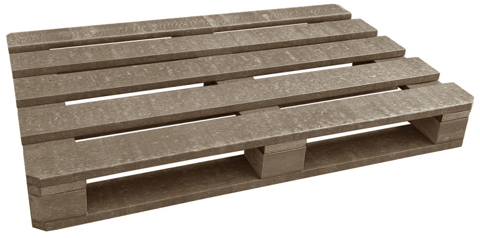

Plastformer - компанія-виробник палет, контейнерів, а також погонажних і збірних виробів з інноваційного спіненого пластику.
Ми першими запустили виробництво профілів і збірних конструкцій з унікального матеріалу, розробленого нашою компанією. Наш асортимент включає погонажну продукцію, піддони, контейнері та нестандартні вироби. Основна перевага нашої продукції – універсальність застосування, легкість обробки стандартними інструментами та класичні методи з'єднання елементів. З нашого матеріалу спочатку виробляються дошки та бруси, що дозволяє створювати як прості, так і складні конструкції з поліпшеними фізичними та експлуатаційними характеристиками, які перевершують традиційні аналоги, такі як дерево та монолітні пластики.
Матеріал - екструдований спінений поліпропілен, колір - сірий, вантажопідйомність - 2 т, вага - 13,5 кг, температура експлуатації -40 до +120(°С), хімічна стійкість, стійкість до УФ, ремонтопридатність, перероблюваність, строк эксплуатаіі 5-10 років, умови постачання EXW.